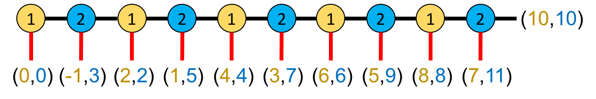
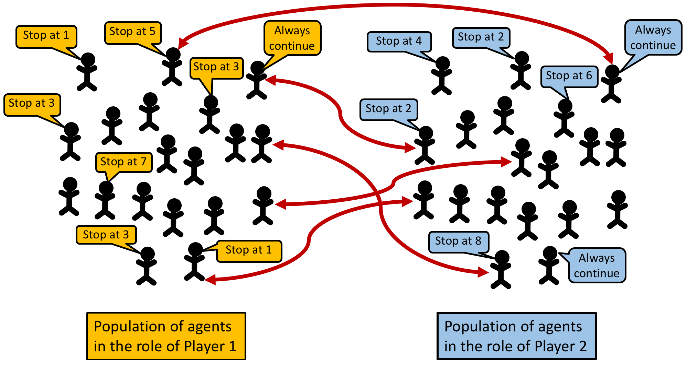

To use centipede-test-two, you will have to install NetLogo 6.1.1 (free and open source) and download the model itself. Unzip the downloaded file and click on centipede-test-two.nlogo
The Centipede game (Rosenthal, 1981) is a canonical game that captures the essence of social dilemmas and is widely used in Game Theory textbooks to illustrate reasoning by backward induction. In this game, there are two players who sequentially decide whether to end their interaction or continue. The original game is shown in the figure below, where player 1's decision nodes are denoted with yellow circles containing number 1, and player 2's decision nodes are coloured in blue.
The game starts on the left, with player 1 as the first mover. Whenever a player decides to end the game (red vertical lines in the figure), player 1 obtains the first number in the pair of payoffs and player 2 obtains the latter. For example, if player 1 decides to end the game at the very beginning (so player 2 cannot make any decision), both players get a payoff of 0. If player 1 chooses to continue at the first node, but player 2 ends the game at the second node (i.e. player 2's first opportunity to decide) then player 1 gets -1 and player 2 obtains 3. Note that the decision to continue implies an immediate cost of 1 unit for the decision maker, but a (greater) benefit of 3 units for the other player. If both players choose to continue at every decision node, they both get a payoff of 10, which is the maximum possible payoff for player 1 and the second largest payoff for player 2.
Like the finitely repeated Prisoner's Dilemma, the Centipede game can be viewed as a stylized representation of relationships in which each participant has repeated opportunities to take costly actions that benefit her partner, and where there is a commonly known date at which the interaction will end. Thus, the Centipede has been used to model a variety of situations, from negotiations in international agreements to joint ventures. In these settings, experimental and anecdotal evidence suggests that cooperative behavior often persists until close to the terminal date (see e.g. McKelvey and Palfrey, 1992). However, when these games are analyzed in Game Theory (imposing common knowledge of rationality), the obtained conclusion is clear-cut regardless of the number of decision nodes: there will be no cooperation at all, i.e. the first player will end the game at the first node. This prediction implies that player 2 gets her minimum possible payoff, and player 1 obtains the second smallest payoff. This discrepancy between the conclusions of Game Theory and observed behavior (and most people's intuition about rationality) is a fundamental puzzle of game theory and an intensely discussed problem in philosophy.
Our model shows that this apparent paradox disappears when one adopts an evolutionary approach, and assumes that agents test different strategies and adopt the one that gives them the best payoff. Importantly, in our model we maintain the assumption that agents respond optimally to the information they possess. However, rather than imposing strong assumptions about agents' knowledge of opponents' behavior (like in Classical Game Theory), we suppose instead that agents' information comes from direct experience playing the strategies available to them.
To be precise, following the standard approach in Evolutionary Game Theory, we suppose that the game is recurrently played by two populations of agents, one for each player role, with agents being randomly matched to play the game.
Instead of assuming that players have precise information about aggregate behavior, we assume instead that they base their decisions entirely on their experiences playing the game, choosing the strategy that performed best during the most recent test of alternatives. Here we study the simplest form of this best-experienced-payoff process (Sandholm, Izquierdo and Izquierdo, 2019, 2020): In each period, some agents are selected at random and given the opportunity to switch strategies. Upon such opportunities, each revising agent randomly selects a single alternate strategy. She tests her current strategy and the alternate strategy κ times each by playing them against randomly matched opponents. She then switches to the alternate strategy if the total payoff of the alternate strategy in the test is higher than the total payoff of his original strategy.
This dynamic model of behaviour leads to conclusions dramatically different from the predictions provided by Classical Game Theory for the Centipede game: for κ = 1 we obtain that there is an almost globally attracting state that exhibits high levels of cooperation. For larger number of trials, we find cycles of mostly cooperative behavior (Izquierdo and Izquierdo, 2020).
This section explains the formal model that centipede-test-two implements. The information provided here should suffice to re-implement the same formal model in any sophisticated enough modelling platform.
In the model, there are two populations consisting of n-of-agents-in-each-pop individuals each, who play a Centipede game with n-of-nodes decision nodes. Individuals from population 1 take the role of player 1 (i.e. first movers), and individuals from the population 2 take the role of player 2 (i.e. second movers).
If the number of decision nodes in Centipede is even, each individual has an associated strategy \(i \in \{1,...,\frac{\color{green}{n-of-nodes}}{2}+1\}\), where strategy \(i \leq \frac{\color{green}{n-of-nodes}}{2}\) corresponds to "stop at your \(i\)-th decision node, and not before", and strategy \(i = \frac{\color{green}{n-of-nodes}}{2}+1\) corresponds to "do not stop". The adaptation to an odd number of decision nodes is simple; in that case, agents in population 1 have one more strategy available to them than individuals in population 2.
Let \(A_{ij}\) and \(B_{ij}\) represent the players' payoffs in population 1 and 2 respectively, when the player in population 1 plays strategy \(i\) and the player in population 2 plays strategy \(j\). These payoff matrices \((A, B)\) can be expressed concisely as \[ (A_{ij},B_{ij})= \begin{cases} (2i-2, 2i-2) &\text{if }i\leq j,\\ (2j-3, 2j+1) &\text{if }j<i. \end{cases}\]
Initially, agents are assigned a strategy at random. The model then runs in discrete time-steps called ticks. Within each tick the following sequence of events takes place:
This sequence of events is repeated iteratively.
centipede-test-two is a model designed to analyse the "Test two, choose the better" rule in the centipede game.
Copyright (C) 2020 Segismundo S. Izquierdo & Luis R. Izquierdo
This program is free software; you can redistribute it and/or modify it under the terms of the GNU General Public License as published by the Free Software Foundation; either version 3 of the License, or (at your option) any later version.
This program is distributed in the hope that it will be useful, but WITHOUT ANY WARRANTY; without even the implied warranty of MERCHANTABILITY or FITNESS FOR A PARTICULAR PURPOSE. See the GNU General Public License for more details.
You can download a copy of the GNU General Public License by clicking here; you can also get a printed copy writing to the Free Software Foundation, Inc., 51 Franklin Street, Fifth Floor, Boston, MA 02110-1301, USA.
Contact information:
Luis R. Izquierdo
University of Burgos, Spain.
e-mail: lrizquierdo@ubu.es
This program has been designed and implemented by Segismundo S. Izquierdo & Luis R. Izquierdo.
Izquierdo, S. S., and Izquierdo, L. R. (2021). "Test two, choose the better" leads to high cooperation in the Centipede game. Journal of Dynamics and Games. . http://dx.doi.org/10.3934/jdg.2021018
McKelvey RD, Palfrey TR (1992) An Experimental Study of the Centipede Game. Econometrica 60(4):803-836. http://dx.doi.org/10.2307/2951567
Rosenthal, R. W. (1981) Games of perfect information, predatory pricing and the chain-store paradox. Journal of Economic Theory 25(1):92-100.https://doi.org/10.1016/0022-0531(81)90018-1
Sandholm, W. H., Izquierdo, S. S., and Izquierdo, L. R. (2019). Best experienced payoff dynamics and cooperation in the Centipede game. Theoretical Economics, 14: 1347-1385. https://doi.org/10.3982/TE3565
Sandholm, W. H., Izquierdo, S. S., and Izquierdo, L. R. (2020). Stability for best experienced payoff dynamics. Journal of Economic Theory, 185:104957. https://doi.org/10.1016/j.jet.2019.104957